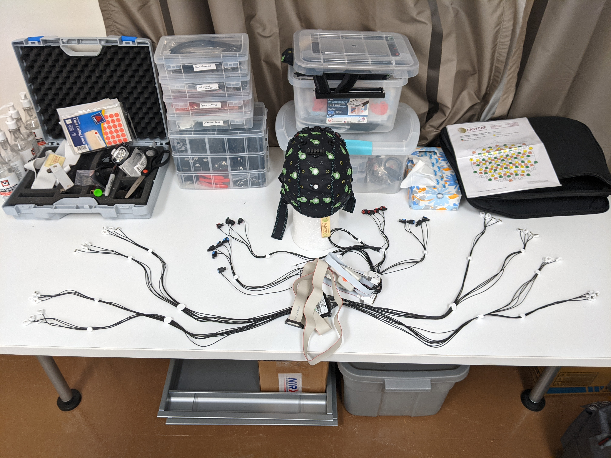
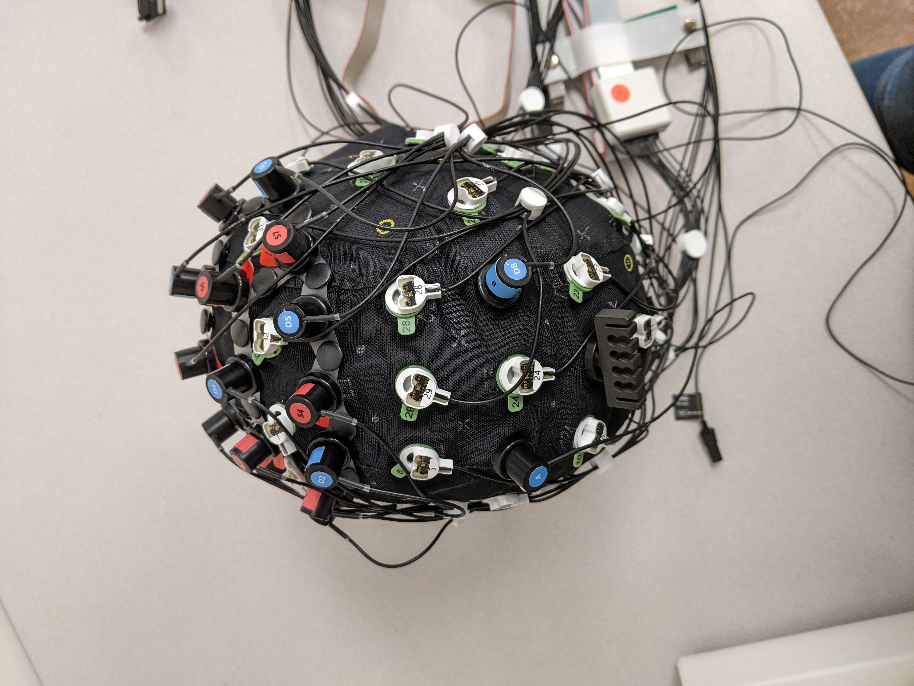

Equipment setup
This is a general setup guide. For troubleshooting, check here: Troubleshooting
Measuring head size
Measure head by pulling tape around circumference of head, widest part of head – above eyebrows & parallel to the ground – most women: 56cm; most men: 58cm
Most frequent sizes: 54, 56, 58, 60
Available sizes: 50, 52, 54, 56, 58, 60, 62
Finding a cap’s size: last two digits on top row of cap label specify
the size 
Setup of the cap (holds EEG/fNIRS)

Put cap on Styrofoam head, and separate out electrodes
Lower numbers will be on the left (1-16), higher numbers on the right (17-32)
Slide electrodes in holders & match up numbers
Make sure cables run downwards-backwards
Put Velcro ties on both sides when done (1-16 in one bundle, 17-32 in the second)
Take out optodes and push them into correct color numbers
Red = sources, blue = detectors, doesn’t matter which ones you start with
Easier if you stand up, can also put fingers under cap to help
White optode holder = “phantom head”
Accelerometer on left, D8 on right of Cz)
Put in ground electrode (black holder) 
You have completed the cap setup! Now, the cap needs to be placed on the participant’s head.
Putting cap on participant
Have participants take off earrings & glasses, wipe forehead & front of ears with baby shampoo
Hold cap from front – back (person 1) and left-right (person 2), make sure front of cap is close to eyebrows
Look at participant - cap should be symmetrical
Put green Velcro holders on optode bundles & attach to participant’s shirt, attach electrode splitter box to shirt
May need to place on the side where the amp/port are)
Hook up ground and electrode cable to amplifier (gray box, don’t forget battery)
Connect HR and skin conductance electrodes

Hook up optodes to the port (smaller, white box)
Open Aurora (rainbow brain) app on IMAC
Tomcat_aug
Hit triangle/play symbol for calibration
Try to get all signal to be green by shimmying, massaging the optodes on cap, or applying the clear ultrasound gel
When done, hit the line plot symbol, then the circle to start recording

Find PID for Aurora and grant it priority
When Aurora is running, open activity monitor app and find Aurora, note down PID (e.g. 1228)
Open blank terminal (right click) and type:
sudo renice -10 [PID]e.g.: sudo renice -10 1228
Measure cap position to make sure it is centered
Measure from ear to ear, take half of the distance = green 24 should be there
Measure from nasion (between eyebrows) to inion (bump at back of head) and Cz (green 24) should be at middle point
Start BrainVision Recorder on desktop PC , hit lightbulb symbol for lights, eye for traces

Put tips on syringes & start putting gel in opening of electrodes – try to aim down and under electrode, then wiggle in circles until it turns green
Optional: open photobooth app so participant can see
Normal for colors of electrode lights to change as you move
Skin Conductance (GSR) & Heart Rate (ECG)
Make sure battery is connected to EEG-Amp. Turn on PC, open Brain Vision Recorder app
Skin Conductance
Grab two white wires, add a good amount of white gel to the center.
Attach tape to sensors and attach to participant’s scapula (shoulder blade) leaving about two fingers’ distance between sensors.
Make sure wires face up and go over shoulder.
Attach wires to box with two holes
double-click GSR in Brain Vision software in trace mode (eye-symbol)
zoom in if needed
Heart Rate
Grab black wire (ground) and two colored wires
use double-sided circles (stickers), remove only white backing
put electrode with thinner side on the sticky end
Attach on participant
black wire: under left collarbone with wire facing up and over the shoulder
colored wires:
one under the right collarbone -> goes in MINUS
the second one below ground under chest (left side) -> goes in PLUS
FILL all three electrodes with ABRALYT gel (grey, grainy gel)
cover each electrode with tape to avoid staining participant’s clothes
Attach to box with three holes, ground in middle
Double-click ECG in Brain Vision software in trace mode (eye-symbol)
Zoom out if needed